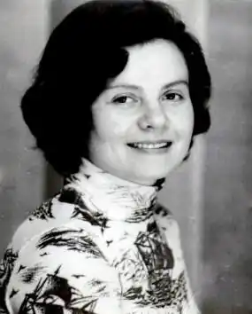

Марія Миколаївна Чепурна народилася 24 жовтня 1948 року у селі Авдіївці, що у Сосницькому районі Чернігівської області.
Батьки Марійки були простими людьми: батько пас колгоспних корів, а мати працювала в полі, вирощувала буряки, картоплю, льон. Дівчина змалечку допомагала своїм батькам у роботі і часто бувала серед природи, де вміла помічати багато цікавого, нового, незвіданого. Цю дитячу цікавість до всього, вміння бачити незвичне у самому простому пронесла Марія через усе своє життя.
У 1958 році мама, Олена Долматівна, повела Марійку у перший клас. Пробувала дівчина писати вірші з самого малку. З 5 класу вона надсилала свої поезії в республіканську газету "Зірка". Дуже сподобались вони редакторам газети й читачам, тому Марію преміювали путівкою у Всесоюзний піонерський табір "Молода гвардія" в Одесі. В "Молодій гвардії" дівчина була дуже активна, брала участь у різних конкурсах, змаганнях. За це їй подарували "Кобзар" Шевченка. Книгу Марія багато читала, перечитувала і була від неї у захопленні. Закінчивши 11 класів, поїхала в Київ на роботу. Працювала Марія Миколаївна спочатку в дитсадку. Згодом вона вступила на вечірній відділ Київського державного університету журналістики. А по закінченню працювала журналістом в журналах і газетах "Вечірній Київ", "Сільські вісті", "Юний ленінець" та ін. Друкувалась і в інших виданнях. Молоду талановиту жінку помітили видатні письменники, поети. Вони запрошували її на зустрічі письменників, творчі вечори, різні зібрання. Тому Марія була знайома з відомим українським поетом Борисом Олійником, Павлом Тичиною, дружила з дитячою поетесою Інною Кульською, поетом Олексою Ющенко та ін. Та життя міське не могло дати сільській душі повного щастя, тому Марія Миколаївна сідала в автобус і їхала в рідне село Авдіївку, щоб провідати рідних. Любила Марія сільську роботу, коли треба все зробити вчасно: і посіяти, й зорати, і грядки прополоти, і сіно на зиму наготувати. Ця робота була їй добре знайома. Тому й народився в душі поетеси чудовий вірш про це. Марія Чепурна видала п'ять збірок віршів для дітей: "Квітне льонок", "Квітне гречка-медуниця", "Нас у мами 25", "Ковпакове джерело", "Батькова криниця". Марію Миколаївну пам'ятають людиною оптимістичної вдачі. Вона була завжди весела, усміхнена, жартівлива, дотепна. Але життя непередбачене… Марія Миколаївна в 45 років захворіла невиліковною хворобою. Останні півтора року жила в Авдіївці у своїх рідних. Вважала, що, можливо, джерельна вода батькової криниці допоможе їй у лікуванні. Але 13 листопада 1995 року Марія Миколаївна Чепурна пішла з життя.